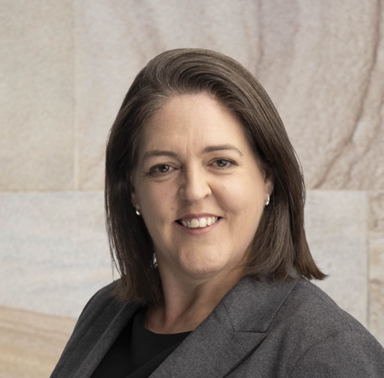
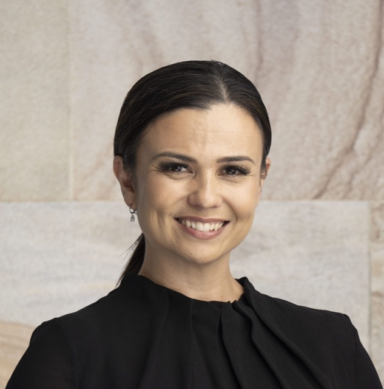
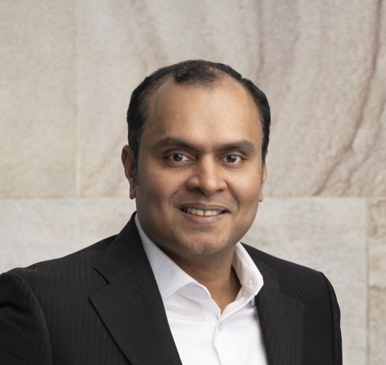

Dedicated professionals with the experience, hard work and commitment to help you succeed.
A multi-disciplinary team of ex-Big 4 partners, senior executives, engineers, lawyers and analysts — ready to take on any challenge, and to make things happen alongside you.



We have a strong network of highly skilled specialist associates, carefully selected for their specialised expertise, reliability and commitment to quality. We leverage these networks on specific projects to support the successful delivery of project outcomes.

Tell us what you’re up against. We’ll bring the experience, the hard work and the commitment to help you make it happen — often against the odds.